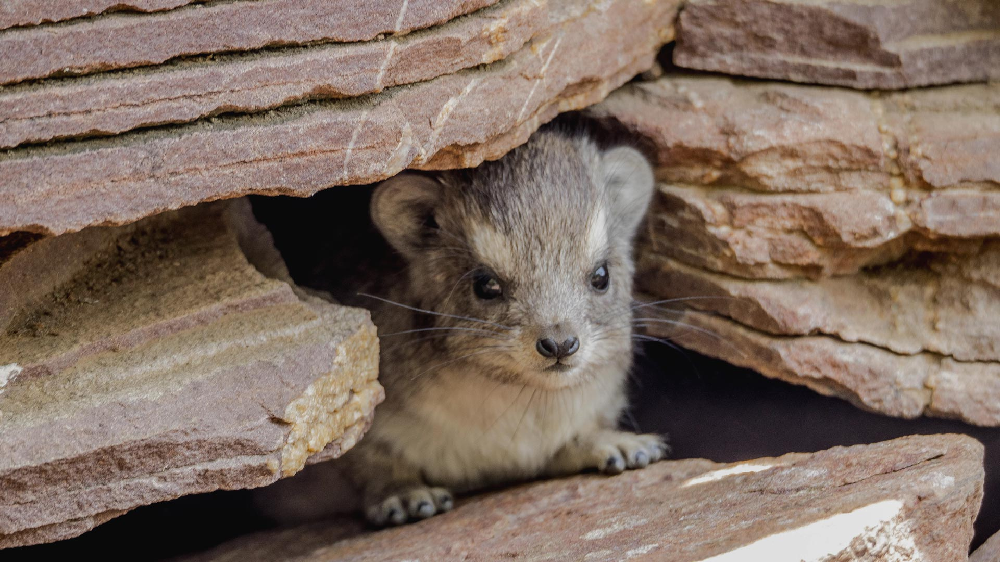

Это животные размером примерно с домашнюю кошку: длина тела от 30 до 60—65 см, масса от 1,5 до 4,5 кг. Хвост зачаточный (1—3 см) или отсутствует. По внешнему виду они напоминают грызунов — бесхвостых сурков или крупных морских свинок, — однако филогенетически ближе всего к сиренам и хоботным.